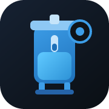

Pinch to zoom · tap or swipe down to close

Read-only snapshot on your phone
Pick the Export ZIP from the desktop tracker, or a bare full-backup.json. Nothing is uploaded — parsing stays on this device.
Large exports with photos can take 10–30 seconds to open on a phone.
Tracker Viewer v2 · Aug 28, 2026